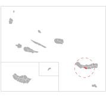

Uma questão de nome
Este pequeno artigo pretende expor alguns aspectos curiosos entre os 308 nomes de municípios portugueses. Tal como se referiu em Divisões Administrativas de Portugal, a maioria dos municípios teve origem nas cartas de foral que os reis atribuíam a certas terras e aos territórios limítrofes, de forma a estabelecer a sujeição destes à Coroa, e impedir que fossem tomados pelos aristocratas. A concessão de um foral constituiu muitas vezes uma medida de fomento, visando incentivar o povoamento em terras difíceis de desbravar e incrementar as culturas menos rendosas.
Tendo em conta que alguns municípios portugueses tem perto de um milhar de anos, a origem de alguns nomes recai em conjecturas nem sempre exactas. É de notar também que a terminologia de alguns municípios pode parecer estranha ou distante da linguística contemporânea, mas convém lembrar que mais de metade destes foram criados na primeira metade do milénio.
Primeira letra
O seguinte gráfico expõe de um modo claro e sucinto a frequência das diferentes letras do alfabeto empregues no inicio de cada denominação municipal. É curioso notar que cerca de 13% dos municípios portugueses começam pela letra A, a mais popular neste contexto; e entre estes, metade partilha a conjugação Al. As letras iniciais mais populares, respectivamente, A, M, V, S, C e P contabilizam aproximadamente 68% do numero total de municípios.
Primeira palavra
Neste segundo estudo analisaram-se as primeiras palavras mais utilizadas na terminologia dos 308 municípios portugueses. Visto que muitos municípios foram criados com a intenção de demarcar os terrenos onde existissem "villas" ou outras propriedades, conforme consta em documentos medievais, não é de admirar que 19 municípios portugueses (6.2%) comecem pela palavra Vila. É notoriamente a primeira palavra mais comum, seguida por São e Santa, ambas com 6 municípios cada.
Homónimos
Existem apenas dois casos de homónimos entre os 308 municípios portugueses. O primeiro caso reparte-se entre o Distrito de Faro e a Região Autónoma dos Açores. O município da Lagoa na ilha de São Miguel (R.A.A.) é o mais antigo, tendo sido criado em 1522, mas possui sensivelmente metade da área total do município da Lagoa, no distrito de Faro, criado em 1773. O segundo caso ocorre entre as duas regiões autónomas. O município da Calheta na ilha da Madeira (R.A.M.) tem uma área muito semelhante ao município da Calheta na ilha de São Jorge (R.A.A.), contudo possui cerca do triplo da população. O município da Calheta (R.A.M.) é ainda o mais antigo, tendo sido criado em 1502, trinta e dois anos antes do município da Calheta na ilha de São Jorge.
| Lagoa | Calheta | |||||
|  | ||||||
| Lagoa (Faro) Ano: 1773 Área: 88,50 km² População: 20 646 hab. |
Lagoa (S.Miguel - Açores) Ano: 1522 Área: 45,57 km² População: 14 126 hab. |
Calheta (S.Jorge - Açores) Ano: 1534 Área: 126,51 km² População: 3 972 hab. |
Calheta (Madeira) Ano: 1502 Área: 115,65 km² População: 11 946 hab. |
Sources
- INE - Instituto Nacional de Estatística
http://www.ine.pt/
- Wikipedia
http://www.wikipedia.org/